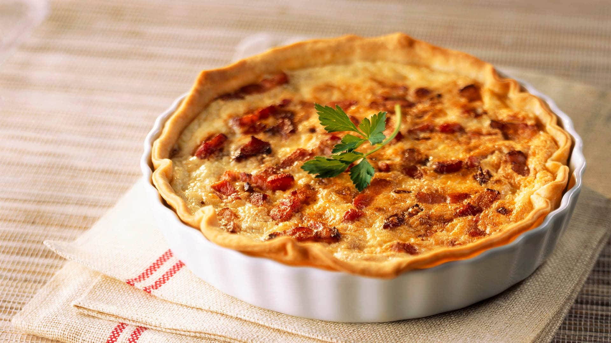

Quiche de Jamón y Bacon
Una deliciosa quiche que combina el sabor del jamón y el bacon.

Ingredientes
- 1 base de masa quebrada
- 100g de jamón cocido
- 100g de bacon
- 200g de queso rallado (tipo emmental o cheddar)
- 3 huevos
- 200ml de nata para montar
- Sal y pimienta
- Nuez moscada (opcional)
Elaboración (Pasos)
- Precalentar el horno a 180°C.
- Extender la masa quebrada en un molde y pincharla con un tenedor.
- En una sartén, dorar el bacon y luego agregar el jamón cortado en trozos.
- En un bol, batir los huevos con la nata, sal, pimienta y nuez moscada.
- Agregar el bacon y el jamón a la mezcla, junto con el queso rallado.
- Verter la mezcla en la masa y hornear durante 30-35 minutos.
- Dejar enfriar antes de servir.
Volver